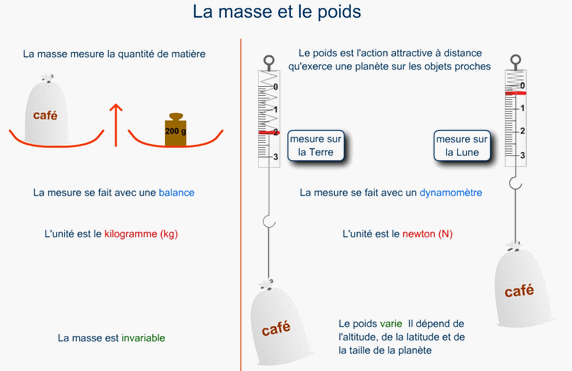

Dans la vie courante, les termes de masse et de poids sont souvent confondus.

La masse d'un corps donne une indication sur la quantité de matière qui le constitue. Ainsi, la masse d’un objet est une grandeur sans direction et constante - tant que l'objet ne subit pas d'altération - qui se rattache au nombre et à la nature des atomes qui le composent.
Dans le système international, l'unité de mesure de la masse est le kilogramme.
Le poids d’un objet, quant à lui, se rapporte à l'action de la force de gravitation sur ce corps. De fait, le poids est une grandeur toujours dirigée vers le centre de la Terre (ou d'un autre corps céleste) et qui dépend :
Ainsi le poids d'un objet est-il plus élevé sur Terre que sur la Lune.
Dans le système international, l'unité de mesure du poids est le Newton.
Il ne faut pourtant pas en conclure qu'un pèse-personne mesure votre masse et non votre poids. En effet, si vous sautez sur le pèse-personne, l'indication va, l'espace d'un instant, largement augmenter. C'est le signe que l'appareil est bien sensible à une force, donc à votre poids. Ce n'est qu'à la fin des années 1940 que le Newton a été adopté comme unité de force. Auparavant, on utilisait le kilogramme-force, d'où la confusion sur le pèse-personne.
Si la masse et le poids sont deux grandeurs différentes, elles sont reliées par une expression simple :
poids = masse x g
où g représente l'intensité de la pesanteur dont la valeur dépend de l'endroit où l'on se trouve.